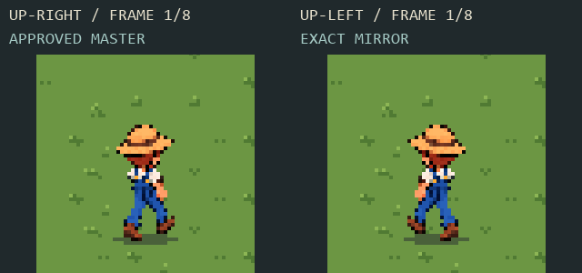
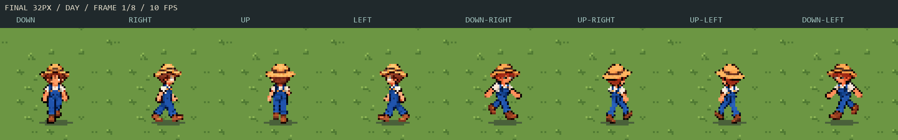
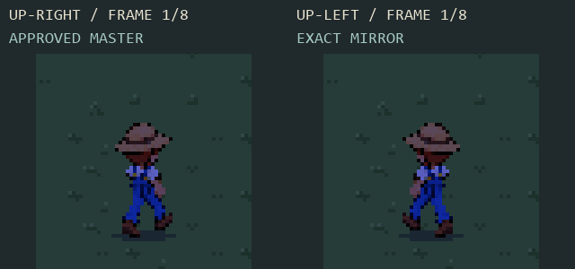
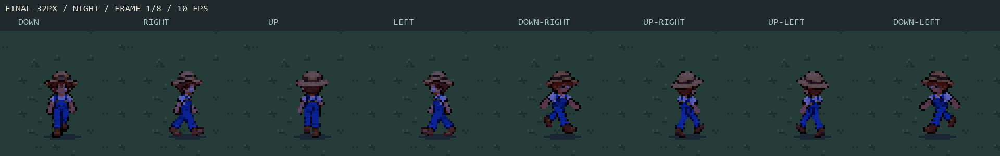

Up-left is now the exact horizontal mirror of the newly approved low-step up-right. The other seven directions retain their approved pixels. Eight phases,10 FPS; no regeneration, recoloring or retiming.




Claude integration prompt / Final asset contract / Export checks